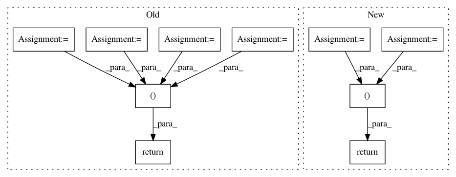

cb556a585da0b65d28d2fc7d52c3851ac1a7d369,open_seq2seq/utils/utils.py,,get_results_for_epoch,#Any#Any#Any#Any#Any#,202
Before Change
if compute_loss:
total_samples_all = MPI.COMM_WORLD.gather(total_samples)
total_loss_all = MPI.COMM_WORLD.gather(total_loss)
results_per_batch_all = MPI.COMM_WORLD.gather(results_per_batch)
MPI.COMM_WORLD.Barrier()
if MPI.COMM_WORLD.Get_rank() != 0:
// returning dummy tuple of correct shape
if compute_loss:
return None, None
else:
return None
if compute_loss:
total_loss = np.sum(total_loss_all)
total_samples = np.sum(total_samples_all)
// moving GPU dimension into the batch dimension
results_per_batch = [item for sl in results_per_batch_all for item in sl]
if compute_loss:
total_loss /= total_samples
return results_per_batch, total_loss
return results_per_batch
After Change
)
if compute_loss:
total_samples = collect_if_horovod(total_samples, model.hvd, "sum")
total_loss = collect_if_horovod(total_loss, model.hvd, "sum")
results_per_batch = collect_if_horovod(results_per_batch, model.hvd, "gather")
if results_per_batch is None:
// returning dummy tuple of correct shape if not in master worker
if compute_loss:
return None, None
else:
return None
if compute_loss:
return results_per_batch, total_loss / total_samples
else:
return results_per_batch
In pattern: SUPERPATTERN
Frequency: 3
Non-data size: 10
Instances
Project Name: NVIDIA/OpenSeq2Seq
Commit Name: cb556a585da0b65d28d2fc7d52c3851ac1a7d369
Time: 2018-05-30
Author: igor.a.gitman@gmail.com
File Name: open_seq2seq/utils/utils.py
Class Name:
Method Name: get_results_for_epoch
Project Name: chainer/chainercv
Commit Name: c988c51e02793d7453ae854cc285ef904c8a535d
Time: 2017-05-06
Author: Hakuyume@users.noreply.github.com
File Name: tests/extensions_tests/detection_tests/test_detection_vis_report.py
Class Name: _RandomDetectionStubLink
Method Name: predict
Project Name: chainer/chainercv
Commit Name: f5ff0f5fb3933bb4e704ce7947e2bd5a99ef8358
Time: 2018-05-02
Author: Hakuyume@users.noreply.github.com
File Name: tests/links_tests/model_tests/yolo_tests/test_yolo_base.py
Class Name: DummyYOLO
Method Name: _decode